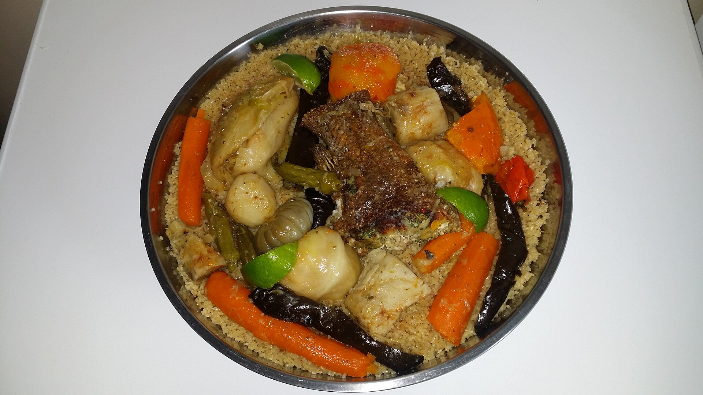
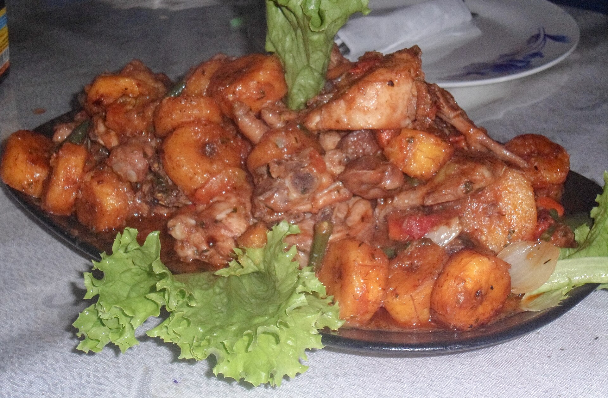
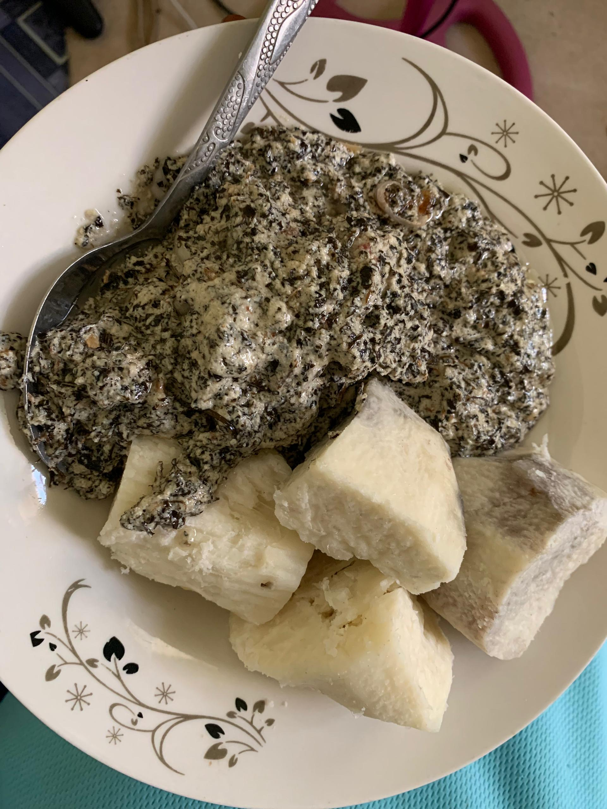
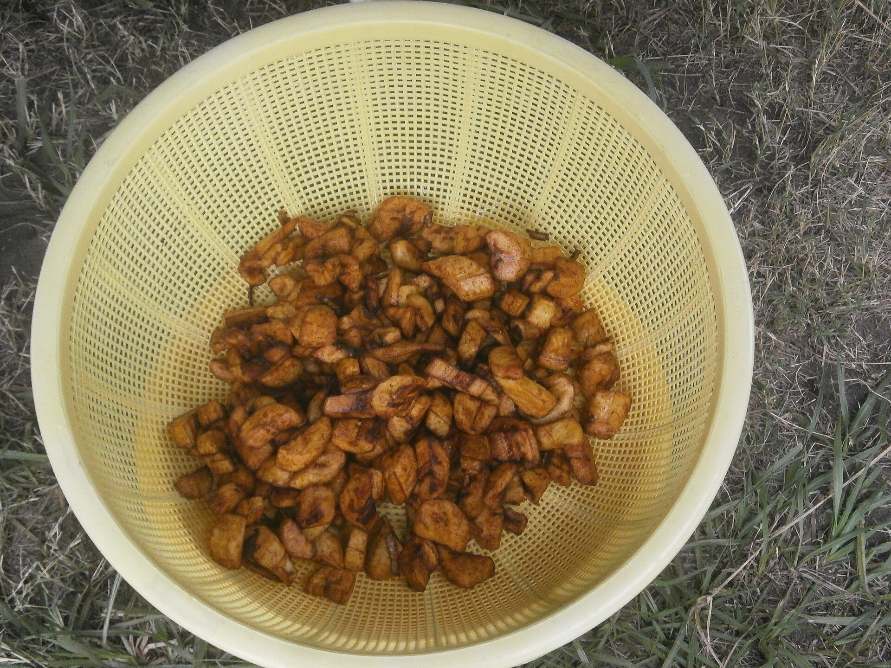
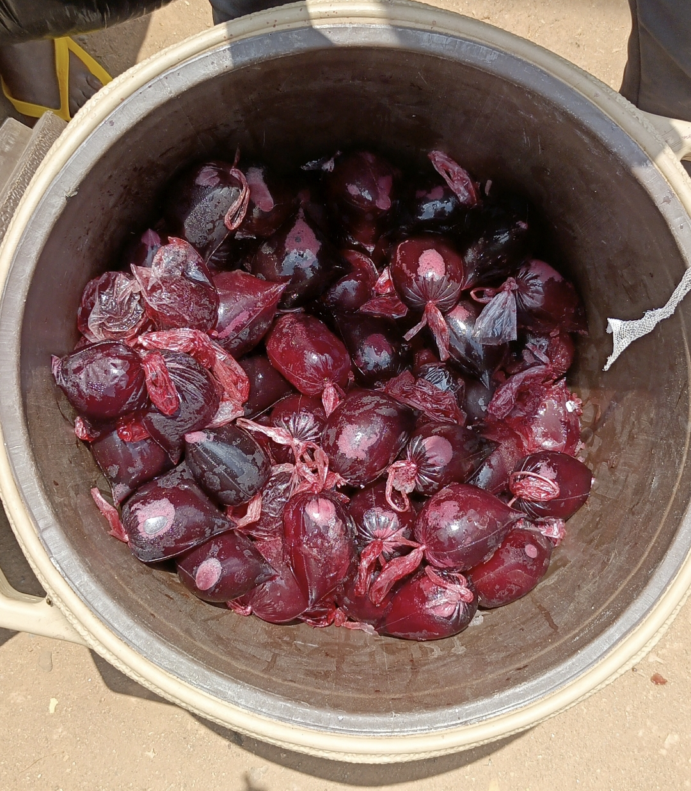

Cuisine africaine · Fait maison
Le goût
du partage.
Des recettes généreuses, des épices parfumées et le plaisir de se retrouver autour d’une belle table.
Découvrir la carte ↓

L’esprit de la maison
Un peu de chez nous,
dans chaque assiette.
Chez-Belvida vous invite à découvrir les cuisines africaines et leurs recettes généreuses. Des plats faits maison, des produits choisis avec soin et le plaisir de bien manger.
Nous rendre visite →Chez-Belvida
Un aperçu de la carte.



Nous trouver
À bientôt à table.
Retrouvez Chez-Belvida à Akassato, au Bénin.
Adresse
Akassato, Bénin
Téléphone
01 59 49 73 67
Email
azongnidjebelvida@gmail.com